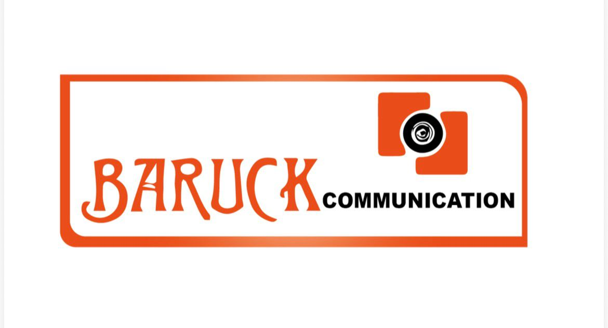
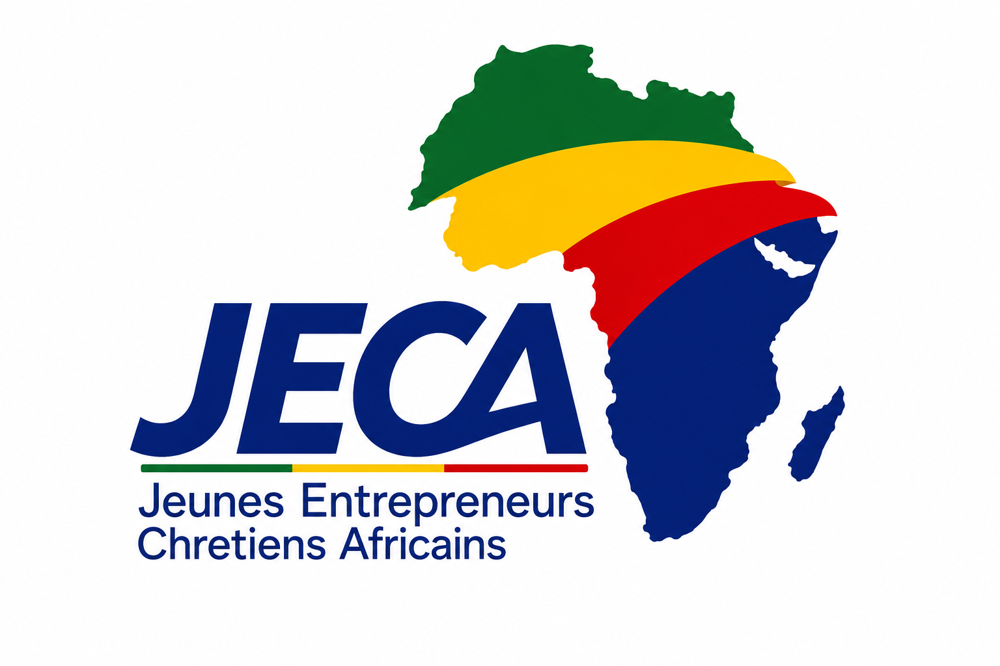
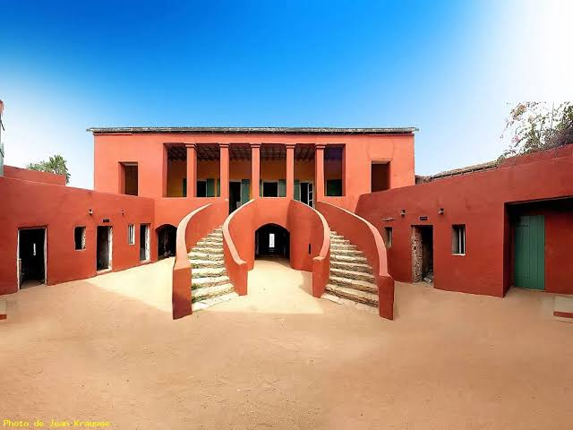

Sensibiliser
Encourager la diaspora africaine à investir sur le continent.

Groupe BaruckPrésident fondateurDjoro Joël Shaloom Krasso

Créée en 2019
La JECA sensibilise la diaspora africaine à l’investissement sur le continent et veut se placer comme un lien entre la diaspora et l’Afrique.
La vision
Pour son président, les États ne peuvent pas tout faire : il faut se réunir pour s’occuper de l’Afrique.
Selon son président, beaucoup de personnes ont peur d’investir après des expériences qui n’ont pas fonctionné. La réponse de la JECA est de sensibiliser au maximum la diaspora africaine afin qu’elle investisse en Afrique.
Encourager la diaspora africaine à investir sur le continent.
Placer la JECA entre la diaspora et l’Afrique.
Lutter contre le chômage et l’immigration clandestine par l’investissement.
De l’intention à l’action
Le président a d’abord mobilisé des Ivoiriens pour investir en Côte d’Ivoire. La démarche s’est ensuite poursuivie en Guinée Conakry, où 20 hectares de forêt ont été acquis avec le projet d’y planter du manioc et de créer une usine d’attiéké.
Cette démarche est présentée comme une façon de lutter contre le chômage et l’immigration clandestine.
Mobiliser des Ivoiriens pour investir en Côte d’Ivoire.
20 hectares acquis pour un projet autour du manioc et d’une usine d’attiéké.

Pourquoi le Sénégal ?
Pour le président, le choix du Sénégal est lié à l’histoire de l’île de Gorée et au voyage de non-retour : des hommes arrachés à leur terre pour aller développer d’autres terres et d’autres nations.
La JECA a compris que, pour pérenniser son action, elle devait aussi venir au Sénégal.
Les rencontres JECA
Dakar · Sénégal
Environ 50 personnes réunies autour de l’entrepreneuriat et de l’investissement en Afrique.
Les participants sont venus du Canada, des États-Unis, de la Côte d’Ivoire, du Togo, du Bénin, de France, d’Angleterre et d’Australie.
Les échanges ont porté sur l’investissement en Afrique, avec des interventions consacrées à ce sujet.
Dakar · Sénégal
La deuxième édition de la JECA s’est tenue une nouvelle fois à Dakar.
Conakry · Guinée
La troisième édition s’est tenue à Conakry. Les images présentent principalement le président et le vice-président.
JECA